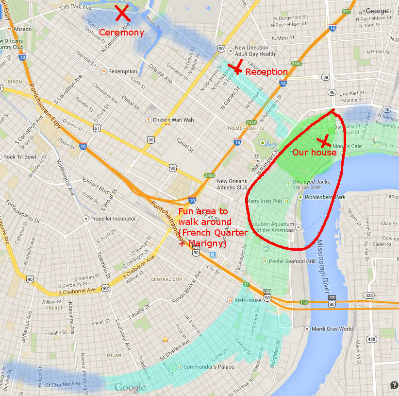

There is a large anasthesiology convention in town the weekend of October 11th so large hotel space will be limited. We recommend people find accomodations in bed & breakfasts. There are many nice ones around with a lot of them actually being advertised on Airbnb
To try and help with this I've created the below map to try and help. All colored areas are fine to look in with the greener areas being more ideal to exploring the walkable parts of the city.
